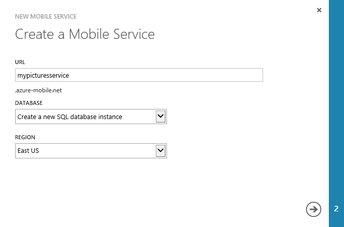
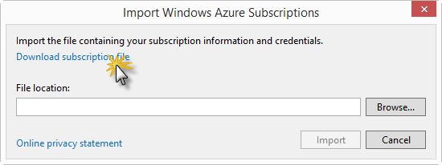
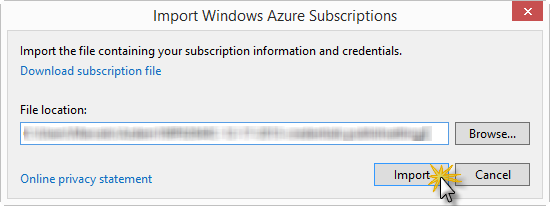
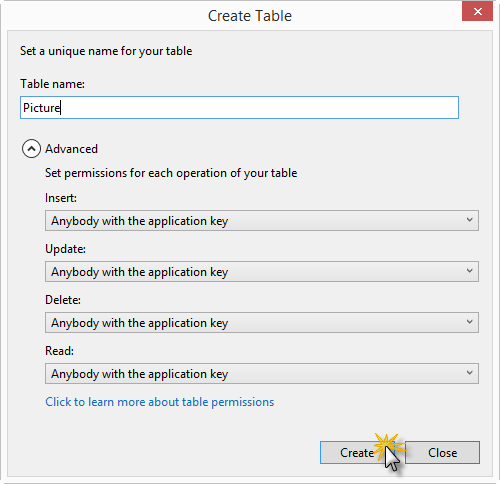
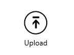

My Pictures Sample - Upload File to Windows Azure Blob Storage using Windows Azure Mobile Services
Introduction
This demonstrates how to store your files such as images, videos, documents or any binary data off device in the cloud using Windows Azure Blob Storage. It will walk you through how to generate a Shared Access Signature using Windows Azure Mobile Services and then show how to upload that Blob using the Windows Azure Storage Client Library. In this example we focus on capturing and uploading images, using the same approach you can upload any binary data to Windows Azure Blob Storage.
Prerequisites
- Visual Studio 2012 Express for Windows 8.1
- and a Windows Azure account - get the Windows Azure Free Trial
Building the Sample
Follow these steps to set up the sample.
-
Create a new Storage Account from the Windows Azure Management Portal.
To do this, follow the instructions in How To Create a Storage Account.
Get the Storage Account Keys. Browse to your storage account dashboard and click Manage Access Keys on the bottom bar.

Copy the Storage Account Name and Primary Access Key values.

-
Create a new Mobile Service from the Windows Azure Management Portal.
To do this, log in to the Windows Azure Management Portal, navigate to Mobile Services and click New.

Expand Compute | Mobile Service, then click Create.
In the Create a Mobile Service page, type a subdomain name for the new mobile service in the URL textbox (e.g: mypicturesservice) and wait for name verification. Once name verification completes, select Create a new SQL Database in the Database dropdown list and click the right arrow button to go to the next page.

This displays the Specify database settings page.
Note: As part of this sample, you create a new SQL database instance and server. You can reuse this new database and administer it as you would with any other SQL database instance. If you already have a database in the same region as the new mobile service, you can instead choose Use existing Database and then select that database. The use of a database in a different region is not recommended because of additional bandwidth costs and higher latencies.
In Name, type the name of the new database. In Server Login Name, specify the administrator login name for the new SQL database server, type and confirm the password, and click the check button to complete the process.

You have now created a new mobile service that can be used by your mobile apps.
-
Import your Windows Azure subscription to Visual Studio.
Note: If you already imported the subscription to Visual Studio you can skip this step.
In Server Explorer, right click on the Windows Azure node and select Import Subscriptions....

Click on Download subscription file, log in to your windows Azure account (if required) and click Save when your browser requests to save the file.

Note: The login window is displayed in the browser, which may be behind your Visual Studio window. Remember to make a note of where you saved the downloaded .publishsettings file.
Click Browse, navigate to the location where you saved the .publishsettings file, select the file, then click Open and then Import. Visual Studio imports the data needed to connect to your Windows Azure subscription.

Security Note: After importing the publish settings, consider deleting the downloaded .publishsettings file as it contains information that can be used by others to access your account. Secure the file if you plan to keep it for use in other connected app projects.
-
Create a table named Album.
Go to Visual Studio. Open Server Explorer, expand Mobile Services under Windows Azure, right-click your mobile service and select Create Table....

Create a new table named Album and set the permissions for Insert, Update, Delete, and Read to "Anybody with the application key".
-
Repeat the previous operation and create a table named Picture. Set permissions for Insert, Update, Delete, and Read to "Anybody with the application key".

-
Expand the Picture table you just created. Then right-click the insert.js script file and select Edit script.

The script opens in an editor window. Here you can insert a JavaScript function that is going to be invoked whenever someone performs an insert (the item to be inserted is passed as a parameter).
Update the content of the file with the code below in order to obtain the Shared Access Signature (SAS) for the pictures you will upload later. Replace the storage account name and key placeholders with your Windows Azure Storage Account credentials.
JavaScriptEdit|Removejsvar azure = require('azure'); var qs = require('querystring'); function insert(item, user, request) { var accountName = '<replace with your storage account name>'; var accountKey = '<replace with your storage account key>'; var host = accountName + '.blob.core.windows.net'; var containerName = 'mypictures-' + item.albumid.toLowerCase(); var pictureRelativePath = '/' + containerName + '/' + item.fileName; var pictureThumbnailRelativePath = '/' + containerName + '/' + item.thumbnailFileName; // Create the container if it does not exist // Use public read access for the blobs, and the SAS to upload var blobService = azure.createBlobService(accountName, accountKey, host); blobService.createContainerIfNotExists(containerName, { publicAccessLevel: 'blob' }, function (error) { if (!error) { // Container exists now define a policy for write access // that starts immediately and expires in 5 mins var sharedAccessPolicy = createAccessPolicy(); // Create the blobs urls with the SAS item.imageurl = createResourceURLWithSAS(accountName, accountKey, pictureRelativePath, sharedAccessPolicy, host); item.thumbnailurl = createResourceURLWithSAS(accountName, accountKey, pictureThumbnailRelativePath, sharedAccessPolicy, host); } else { console.error(error); } request.execute(); }); } function createResourceURLWithSAS(accountName, accountKey, blobRelativePath, sharedAccessPolicy, host) { // Generate the SAS for your BLOB var sasQueryString = getSAS(accountName, accountKey, blobRelativePath, azure.Constants.BlobConstants.ResourceTypes.BLOB, sharedAccessPolicy); // Full path for resource with SAS return 'https://' + host + blobRelativePath + '?' + sasQueryString; } function createAccessPolicy() { return { AccessPolicy: { Permissions: azure.Constants.BlobConstants.SharedAccessPermissions.WRITE, // Start: use for start time in future, beware of server time skew Expiry: formatDate(new Date(new Date().getTime() + 5 * 60 * 1000)) // 5 minutes from now } }; } function getSAS(accountName, accountKey, path, resourceType, sharedAccessPolicy) { return qs.encode(new azure.SharedAccessSignature(accountName, accountKey) .generateSignedQueryString(path, {}, resourceType, sharedAccessPolicy)); } function formatDate(date) { var raw = date.toJSON(); // Blob service does not like milliseconds on the end of the time so strip return raw.substr(0, raw.lastIndexOf('.')) + 'Z'; }var azure = require('azure'); var qs = require('querystring'); function insert(item, user, request) { var accountName = '<replace with your storage account name>'; var accountKey = '<replace with your storage account key>'; var host = accountName + '.blob.core.windows.net'; var containerName = 'mypictures-' + item.albumid.toLowerCase(); var pictureRelativePath = '/' + containerName + '/' + item.fileName; var pictureThumbnailRelativePath = '/' + containerName + '/' + item.thumbnailFileName; // Create the container if it does not exist // Use public read access for the blobs, and the SAS to upload var blobService = azure.createBlobService(accountName, accountKey, host); blobService.createContainerIfNotExists(containerName, { publicAccessLevel: 'blob' }, function (error) { if (!error) { // Container exists now define a policy for write access // that starts immediately and expires in 5 mins var sharedAccessPolicy = createAccessPolicy(); // Create the blobs urls with the SAS item.imageurl = createResourceURLWithSAS(accountName, accountKey, pictureRelativePath, sharedAccessPolicy, host); item.thumbnailurl = createResourceURLWithSAS(accountName, accountKey, pictureThumbnailRelativePath, sharedAccessPolicy, host); } else { console.error(error); } request.execute(); }); } function createResourceURLWithSAS(accountName, accountKey, blobRelativePath, sharedAccessPolicy, host) { // Generate the SAS for your BLOB var sasQueryString = getSAS(accountName, accountKey, blobRelativePath, azure.Constants.BlobConstants.ResourceTypes.BLOB, sharedAccessPolicy); // Full path for resource with SAS return 'https://' + host + blobRelativePath + '?' + sasQueryString; } function createAccessPolicy() { return { AccessPolicy: { Permissions: azure.Constants.BlobConstants.SharedAccessPermissions.WRITE, // Start: use for start time in future, beware of server time skew Expiry: formatDate(new Date(new Date().getTime() + 5 * 60 * 1000)) // 5 minutes from now } }; } function getSAS(accountName, accountKey, path, resourceType, sharedAccessPolicy) { return qs.encode(new azure.SharedAccessSignature(accountName, accountKey) .generateSignedQueryString(path, {}, resourceType, sharedAccessPolicy)); } function formatDate(date) { var raw = date.toJSON(); // Blob service does not like milliseconds on the end of the time so strip return raw.substr(0, raw.lastIndexOf('.')) + 'Z'; }
When you save changes to the insert.js file, a new version of the script is uploaded to your mobile service.
-
Connect the Windows 8 app to Mobile Services.
Get the Mobile Service URL and Mobile Service Key values. Browse to your Mobile Service dashboard, copy the service URL and click Manage Keys on the bottom bar.

Now copy the Application Key value.

In Visual Studio, open the Windows Store app provided in this sample, open the App.xaml.cs file in the solution and replace the placeholders {mobile-service-url} and {mobile-service-key} with the values obtained in the previous steps.
<!-- mark:2-3 -->C#Edit|Removecsharpprivate static MobileServiceClient mobileService = new MobileServiceClient( "https://{mobile-service-name}.azure-mobile.net/", "{mobile-service-application-key}");private static MobileServiceClient mobileService = new MobileServiceClient( "https://{mobile-service-name}.azure-mobile.net/", "{mobile-service-application-key}");
-
Use the Windows Azure Storage Client Library to upload blobs.
In Visual Studio, install the WindowsAzure.Storage-Preview NuGet package in the project using the Package Manage Console directly within Visual Studio
<!-- mark:1 -->PowerShellEdit|RemovepowershellInstall-Package WindowsAzure.Storage-Preview -Pre
Install-Package WindowsAzure.Storage-Preview -Pre
Right-click the DataModel folder and select Add | Class.... In the Add New Item dialog box, change the name of the class file to BlobStorageHelper.cs and click Add. Replace the contents of the class file with the code below.
C#Edit|Removecsharp{ using System; using System.IO; using System.Threading.Tasks; using Microsoft.WindowsAzure.Storage.Auth; using Microsoft.WindowsAzure.Storage.Blob; public class BlobStorageHelper { public static async Task UploadBlob(Stream fileStream, string fileName, string blobUrl, string containerName) { fileStream.Position = 0; var sasUri = new Uri(blobUrl); //// Our credential for the upload is our SAS token StorageCredentials cred = new StorageCredentials(sasUri.Query.Substring(1)); CloudBlobContainer container = new CloudBlobContainer(new Uri(string.Format("https://{0}/{1}", sasUri.Host, containerName)), cred); CloudBlockBlob blobFromSASCredential = container.GetBlockBlobReference(fileName); await blobFromSASCredential.UploadFromStreamAsync(fileStream.AsInputStream()); } } }{ using System; using System.IO; using System.Threading.Tasks; using Microsoft.WindowsAzure.Storage.Auth; using Microsoft.WindowsAzure.Storage.Blob; public class BlobStorageHelper { public static async Task UploadBlob(Stream fileStream, string fileName, string blobUrl, string containerName) { fileStream.Position = 0; var sasUri = new Uri(blobUrl); //// Our credential for the upload is our SAS token StorageCredentials cred = new StorageCredentials(sasUri.Query.Substring(1)); CloudBlobContainer container = new CloudBlobContainer(new Uri(string.Format("https://{0}/{1}", sasUri.Host, containerName)), cred); CloudBlockBlob blobFromSASCredential = container.GetBlockBlobReference(fileName); await blobFromSASCredential.UploadFromStreamAsync(fileStream.AsInputStream()); } } }
Note: This helper method will be called to upload the picture and the picture's thumbnail directly to blob storage using SAS and the Storage Client library for Windows 8.
Open the AlbumDataSource.cs file in the DataModel folder, and locate the //// TODO line inside the UploadPicture method. Replace that line with the following code to upload the picture to blob storage using SAS.
C#Edit|Removecsharppublic static async Task UploadPicture(UploadViewModel uploadForm) { ... var containerName = string.Format("mypictures-{0}", pictureItem.AlbumId).ToLowerInvariant(); //// Upload picture directly to blob storage using SAS and the Storage Client library for Windows 8 //// Get a stream of the image just taken using (var fileStream = await uploadForm.PictureFile.OpenStreamForReadAsync()) { await BlobStorageHelper.UploadBlob(fileStream, pictureItem.FileName, pictureItem.ImageUrl, containerName); } //// Thumbnail upload using (var fileStream = uploadForm.PictureThumbnail.AsStreamForRead()) { await BlobStorageHelper.UploadBlob(fileStream, pictureItem.ThumbnailFileName, pictureItem.ThumbnailUrl, containerName); } //// Update the picture Table to remove the SAS from the URL pictureItem.ThumbnailUrl = pictureItem.ThumbnailUrl.Substring(0, pictureItem.ThumbnailUrl.IndexOf('?')); pictureItem.ImageUrl = pictureItem.ImageUrl.Substring(0, pictureItem.ImageUrl.IndexOf('?')); await pictureTable.UpdateAsync(pictureItem); ... }public static async Task UploadPicture(UploadViewModel uploadForm) { ... var containerName = string.Format("mypictures-{0}", pictureItem.AlbumId).ToLowerInvariant(); //// Upload picture directly to blob storage using SAS and the Storage Client library for Windows 8 //// Get a stream of the image just taken using (var fileStream = await uploadForm.PictureFile.OpenStreamForReadAsync()) { await BlobStorageHelper.UploadBlob(fileStream, pictureItem.FileName, pictureItem.ImageUrl, containerName); } //// Thumbnail upload using (var fileStream = uploadForm.PictureThumbnail.AsStreamForRead()) { await BlobStorageHelper.UploadBlob(fileStream, pictureItem.ThumbnailFileName, pictureItem.ThumbnailUrl, containerName); } //// Update the picture Table to remove the SAS from the URL pictureItem.ThumbnailUrl = pictureItem.ThumbnailUrl.Substring(0, pictureItem.ThumbnailUrl.IndexOf('?')); pictureItem.ImageUrl = pictureItem.ImageUrl.Substring(0, pictureItem.ImageUrl.IndexOf('?')); await pictureTable.UpdateAsync(pictureItem); ... }
Running the Sample
-
In Visual Studio, press F5 to launch the application.
Note: If this is the first time you run the app, you may get an error message saying that the build restored the NuGet packages. If that is the case, run the app one more time to include those packages in the build (for more information, see http://go.microsoft.com/fwlink/?LinkID=317568).
-
In the main page, swipe the bottom edge of the screen (or right-click with the mouse) to make app bars appear and click or tap Upload.

-
In the upload page, select an image and provide the required information. Then, click or tap the Upload picture button.

-
The new uploaded picture is shown in the main page.

-
Switch to the Windows Azure Management Portal, and select the storage account created for this sample.
-
In the Containers tab, select the container and browse to the URL of the uploaded blob.